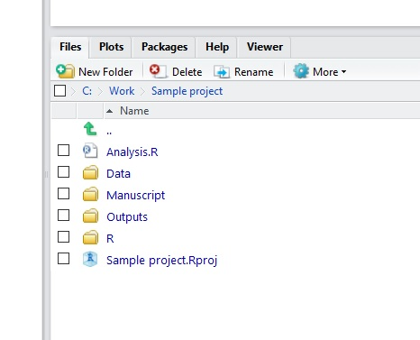

Tener tus archivos de datos, scripts de R y salidas organizados es muy útil para llevar un registro de lo que estás trabajando y para compartir datos o scripts con colegas o supervisores. Trata de evitar tener una carpeta en tu computadora que sea una mezcla de hojas de cálculo, imágenes, documentos de procesamiento de texto, etc. Cómo organices tus archivos es tu elección, pero un poco de planificación y organización de proyectos al principio te dará muchos beneficios a largo plazo. Aquí están nuestras sugerencias para mantener tus proyectos organizados de manera ordenada.
Configurar una carpeta de proyecto
Crea una carpeta en tu computadora para cada uno de los proyectos que desarrolles. Esto podría ser un curso que estás realizando actualmente, un capítulo de tu tesis o cualquier tipo de proyecto de investigación. Dentro de esa carpeta, incluye lo siguiente:
- Una carpeta de datos (incluyendo metadatos).
- Una carpeta de salidas (con subcarpetas “Figuras” y “Tablas” y posiblemente “Material Suplementario”).
- Un script de R que ejecutará la manipulación de datos, análisis y creará las figuras requeridas para el proyecto (intenta mantener este script de R corto y legible).
- Una carpeta para funciones de R (si se utilizan), generalmente llamada “R”.
- Una carpeta para escritura y referencias llamada “Manuscritos”.
La carpeta de datos debe contener los datos sin procesar (generalmente ingresados en un programa de hojas de cálculo). Después de terminar de ingresar tus datos, debes intentar mantener estos datos intactos; todas las cosas que desees hacer con los datos, como limpiar los datos y trabajos con subconjuntos, resumir los datos en una tabla, realizar análisis estadísticos o crear figuras, se pueden hacer mediante scripts de R. Esto mantiene un registro de todo lo que haces. Piensa en este/estos script(s) como el cuaderno de laboratorio de un científico de datos. Los resultados intermedios son buenos, sepáralos de los datos sin procesar y guárdalos en la carpeta de salidas.
Uno de los objetivos de esta organización de proyectos es que tu procesamiento y análisis de datos sean completamente reproducibles, y como tal, tanto los datos como los métodos exactos pueden compartirse con colegas y supervisores, quienes luego pueden repetir y, esperamos, ampliar tus análisis. Además, aunque en este momento puedes conocer todos los archivos y pasos, piensa en ti mismo/a dentro de un año cuando hayas pasado a otros trabajos o proyectos; intenta ser amable contigo mismo/a en el futuro y tomar buenas notas. En contraste, si utilizas un programa de apuntar y hacer clic o una hoja de cálculo para realizar pasos importantes en tu análisis, deberás recordar todos los pasos tomados para recrear los análisis o figuras. La mayoría de los análisis en algún momento se vuelven demasiado complicados como para que esto sea viable.
Uso de los archivos de proyecto de RStudio
Una forma fácil de acceder a todos estos archivos es utilizar un archivo de proyecto. En RStudio, puedes crear un nuevo archivo de proyecto con File, New Project. A continuación, se te preguntará si deseas crear un nuevo directorio o asociarlo con un directorio existente.

Elige esta segunda opción para tener un archivo de proyecto asociado con la carpeta que creaste anteriormente.
Una vez creado, puedes abrir tu proyecto haciendo clic directamente en ese archivo o desde File, Open si ya tienes RStudio abierto. Una vez abierto, verás la estructura de tu directorio en el panel de archivos en la parte inferior derecha de RStudio y todos tus scripts y datos serán fácilmente accesibles.

Un gran beneficio de trabajar con el enfoque de proyecto es que cuando importas datos, no necesitas especificar el directorio de trabajo con setwd. RStudio buscará dentro de la carpeta que contiene el proyecto. Al usar read.csv(""), presiona la tecla tab repetidamente cuando estés dentro de las "" para elegir las carpetas y archivos locales:
read.csv("/Data/Survey_data.csv")
El archivo de datos se encuentra con una ruta relativa, en lugar de las alternativas de una ruta completa en la función read.csv o establecer el directorio de trabajo y luego usar read.csv.
read.csv("C:/Work/Data/Survey_data.csv")
setwd("C:/Work/Data")
read.csv(file = "Survey_data.csv")
De manera similar, cuando exportas un archivo (por ejemplo, figuras o tablas), puedes guardarlos en tu carpeta de salidas (lejos de los datos crudos).
write.csv("/Outputs/Survey_summary_table.csv")
Ahora puedes simplemente copiar toda la carpeta de tu proyecto a cualquier otra computadora (de escritorio a portátil, de estudiante a supervisor, etc.) y tu código siempre funcionará sin tener que cambiar el directorio de trabajo en cada máquina.
Si tienes varios archivos de proyectos de R, puedes cambiar fácilmente entre ellos haciendo clic en el nombre del proyecto en la parte superior derecha de RStudio.
Ayuda adicional
La ayuda de RStudio sobre el uso de proyectos
Nuestra introducción al control de versiones para realizar un seguimiento de las revisiones de los archivos del proyecto.
Autor: Alistair Poore y Will Cornwell
Año: 2016
Última actualización: Jun. 2023